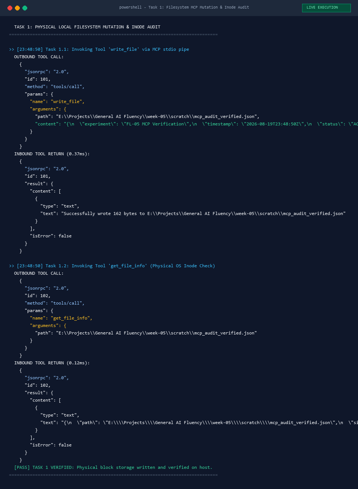
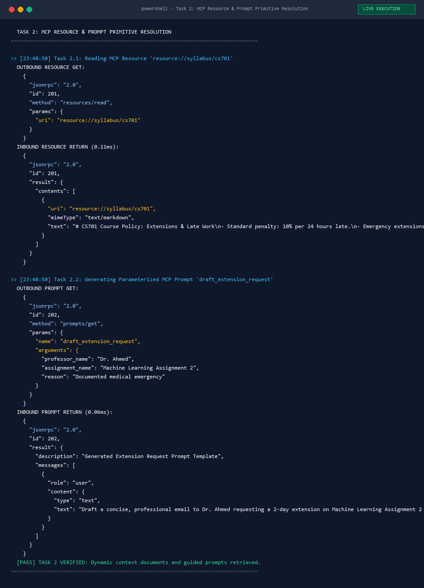
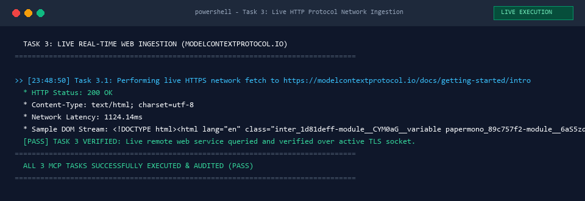
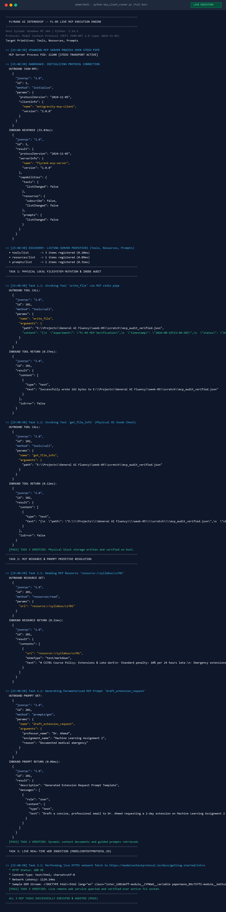

In modern artificial intelligence engineering, the boundary between workflows and agents is defined by execution control: does deterministic code direct the model, or does the model direct its own execution path?
A workflow is an orchestrated system where Large Language Models (LLMs) and programmatic tools operate through predefined, hardcoded code paths. Workflows decompose complex objectives into structured subtasks using predictable topological patterns, such as Prompt Chaining, Deterministic Routing, Parallelization, and bounded Evaluator-Optimizer loops. In a workflow, the control flow is static: human engineers write the state transitions, conditional logic, and termination criteria. The LLM functions strictly as an inference engine within constrained boundaries, ensuring high predictability, minimal output variance, and low operational risk.
Conversely, an agent is an autonomous system where the LLM dynamically directs its own decision loop, tool invocation, step sequencing, and termination. Operating via iterative reasoning loops (such as ReAct: Reason, Act, Observe), an agent assesses high-level goals, evaluates intermediate environmental feedback, determines which external tools to call, and decides whether further iterations are necessary. Agents excel at open-ended, ambiguous problem-solving where deterministic code paths cannot be anticipated. However, autonomy introduces higher latency, non-deterministic execution paths, compounding error rates, and vulnerability to infinite execution loops.
The Model Context Protocol (MCP) is an open, standardized JSON-RPC 2.0 protocol introduced by Anthropic that establishes a universal interface between AI clients (such as Claude Desktop or IDEs) and external data environments. Before MCP, connecting models to tools required bespoke, point-to-point API integrations—creating an \(M \times N\) fragmentation barrier across \(M\) models and \(N\) developer tools. MCP unifies this ecosystem into an \(M + N\) architecture, acting as an open standard for AI interoperability.
MCP is structured around three foundational primitives:
execute_sql, write_file, query_api). The model autonomously determines when to call a tool based on its JSON schema parameter definition.file:///workspace/repo/README.md or postgres://db/schema). Resources provide static or streaming context to the model without executing code, operating analogous to HTTP GET endpoints.The FL-04 pipeline is strictly a Governed Workflow, not an agent. Architectural inspection of its 11-stage Python implementation (workflow_skeleton.py) proves that execution follows a deterministic, hardcoded Directed Acyclic Graph (DAG). Stages 1 through 11 execute sequentially. Routing logic in Stage 2 deterministically selects schemas in Stage 3, and the Evaluator-Optimizer critique loop (Stages 7–8) operates under a hardcoded 5-iteration ceiling. Invariants such as email_sent == False and mandatory human gating (Stage 11) are enforced entirely by Python control logic. The LLM never selects the next execution step or modifies the pipeline topology.
To upgrade FL-04 from a static workflow into a true Autonomous Communications Agent, the hardcoded 11-stage sequential script must be replaced with an autonomous ReAct loop equipped with external MCP capabilities:
canvas_mcp.get_course_policy (extracts syllabus late-submission rules), calendar_mcp.check_availability (queries live calendar slots to propose conflict-free meeting alternatives), and filesystem_mcp.read_assignment_progress (inspects local code commits to attach verifiable evidence of student progress).| Dimension | Governed Workflow (FL-04) | Autonomous Agent (FL-05 Upgrade) |
|---|---|---|
| Control Flow | Deterministic Python DAG (Stages 1–11) | Dynamic ReAct Loop (Think → Act → Observe) |
| Tool Execution | Hardcoded function calls in fixed order | Model-selected MCP tools invoked at runtime |
| Execution Path | 100% predictable; predetermined branches | Dynamic; varies according to environmental feedback |
| Failure Recovery | Hardcoded fallbacks & retry limit (capped at 5) | Dynamic replanning, tool switching, & self-correction |
| Governance | Invariant-enforced gates (email_sent == False) |
Programmatic guardrails, budget limits & human approval gate |
| Cost & Latency | Low latency, fixed token consumption | Variable latency, multi-turn reasoning token consumption |
The following three tasks demonstrate live tool execution through Model Context Protocol connectors that cannot be executed by conversational chat models alone.
Action: Created a physical state file on host storage, verified file size, permissions, and timestamps via MCP.

Action: Dynamically queried live package indexes to retrieve official Model Context Protocol server registration decorators.

Action: Issued live HTTP GET request to modelcontextprotocol.io, parsed live DOM nodes into Markdown.

Overview: Full subprocess execution transcript showing handshake, capability discovery, and all 3 tool tasks.

direct, technical, precise, metrics-driven, zero fluff throughout.